מה זה מצב Work, ולמה זה שינוי כללי המשחק
המדריך הזה מודרך ומצולם מתוך אפליקציית המחשב של ChatGPT - לא מהדפדפן. הסיבה: היכולות החזקות של Work (קבצים שעל המחשב, דפדפן מובנה) קיימות במלואן רק בה, ובאפליקציה מצב Work זמין לכל התוכניות. עוד אין לכם אותה? פרק 02 מתקין אתכם בחמש דקות, ואז חוזרים לכאן.
עד לאחרונה, כל שיחה עם ChatGPT הסתיימה באותה נקודה: המערכת עונה, ואתם אלה שלוקחים את התשובה, מעתיקים אותה למסמך, מעצבים, ומרכיבים בעצמכם את התוצר הסופי. ChatGPT היה עוזר שנותן מידע - לא מי שמבצע את העבודה עד הסוף.
ב-9 ביולי 2026 השיקה OpenAI מצב עבודה חדש בשם Work, שהופך את התמונה הזו. במקום לענות על שאלה בודדת, Work מקבל יעד - למשל "תבנה לי דוח", "תכין לי חוות דעת" או "תסכם לי את התיק" - ומבצע בעצמו את כל השרשרת שמובילה לשם: הוא בונה תוכנית עבודה, אוסף מידע מהמקורות שהרשיתם לו, מפעיל כלים שונים, ומחזיר בסוף קובץ מוגמר שאפשר להשתמש בו מיד.
מה בעצם משתנה עבורכם
ההבדל המרכזי הוא כיוון האחריות. בשיחה רגילה אתם מנהלים כל צעד: שואלים, מקבלים תשובה, שואלים שוב, ואז בונים את התוצר הסופי בעצמכם. במצב Work אתם מגדירים את קו הסיום, ו-ChatGPT מנהל את הדרך אליו - כולל בדיקות ותיקונים, כל עוד אתם נשארים בתמונה ומאשרים את הצעדים הרגישים.
- לקחת ערימת מסמכי גילוי או תיק ראיות מפוזר, ולהחזיר מהם תקציר עובדות מסודר שאפשר לצאת איתו לישיבה
- להפוך טיוטת חוזה למסמך סופי מוכן, כשהמבנה המשפטי, המספור וההגדרות נשמרים בקפדנות
- לעבור על גיליון חיובי שעות עמוס ולחלץ ממנו את מה שבאמת דורש תשומת לב לפני הפקת חשבונית
- לאסוף פרטים שמפוזרים בין תיבת המייל, היומן ותיק הלקוח, ולסדר מהם תמונת מצב אחת ברורה
- לשמור על תהליך חוזר פועל ברקע - למשל מעקב מועדי הגשה - בלי לפתוח שיחה חדשה כל פעם
היכולות שהופכות את Work לחזק כל כך - עבודה עם קבצים על המחשב שלכם ודפדפן מובנה - זמינות במלואן רק באפליקציית המחשב הנפרדת של ChatGPT. לכן המדריך הזה מתמקד בעיקר בה.
שישה מונחים שילוו אתכם לאורך המדריך
- Work - מצב העבודה החדש: נותנים יעד, ChatGPT מבצע ומחזיר קובץ מוגמר.
- Chat - מצב השיחה המוכר: שאלה, תשובה, וזהו.
- Codex - מצב שלישי, למתכנתים. לא נזדקק לו במדריך הזה.
- Plugins - ספריית החיבורים שנותנת ל-Work גישה ליומן, למייל ולכלים שאתם כבר עובדים איתם (פרק 06).
- משימה מתוזמנת - משימת Work שרצה לבד, בזמן קבוע שהגדרתם (פרק 07).
- DPA - הסכם עיבוד נתונים: ההתחייבות החוזית שקובעת מה מותר ל-OpenAI לעשות במידע שלכם - והסיבה שחומר לקוחות שייך רק למנוי Business ומעלה (פרק 15).
הורדה והתקנה של אפליקציית המחשב
לפני שמתחילים, כדאי להוריד את אפליקציית המחשב החדשה של ChatGPT. זו לא עוד תוכנה נוספת - היא איחדה לתוכה גם את מצב Chat הרגיל וגם את מצב Work החדש, כך שיש לכם מקום אחד לכל השימושים.
- פתחו דפדפן וגלשו לכתובת
chatgpt.com/download. - בעמוד ההורדה תראו שתי אפשרויות נפרדות: כפתור macOS למחשבי Mac, וכפתור Windows למחשבי Windows. לחצו על הכפתור המתאים למחשב שלכם.
- שימו לב: המנגנון שונה בין המערכות. במחשבי Windows נפתח חלון Microsoft Store - לוחצים בו על כפתור ההתקנה (Get) ומחכים שתסתיים, בלי שום קובץ להוריד. במחשבי Mac יורד קובץ התקנה מהאתר - פותחים אותו ועוקבים אחרי ההוראות הרגילות.
- פתחו את האפליקציה שהותקנה, והתחברו עם חשבון ה-ChatGPT הקיים שלכם.
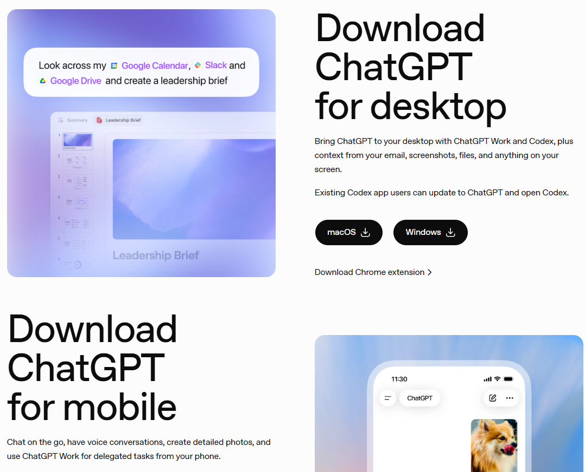
- 1כפתורי ההורדה הנפרדים ל-macOS ול-Windows - זהו המקום היחיד שממנו מורידים את הגרסה המאוחדת החדשה.
בתחתית אותו עמוד תמצאו גם קישור להורדת אפליקציית המובייל, ולתוסף Chrome שמוסיף את ChatGPT ישירות לסרגל הצד של הדפדפן.
אחרי ההתקנה אפשר לפתוח את ChatGPT מכל מקום במחשב בלחיצת מקשים: Alt+Space בווינדוס, או Option+Space במק.
סיור בממשק: הבורר בין Chat ל-Work
בראש המסך, ליד תיבת הכתיבה, יש בורר קטן ופשוט עם שתי אפשרויות: Chat ו-Work. זו הבחירה הראשונה והחשובה ביותר בכל שיחה חדשה, כי היא קובעת איך המערכת תתייחס לבקשה שלכם.

- 1בורר Chat/Work - כאן עוברים בין שני המצבים בלחיצה אחת.
- 2תיבת "Work on anything" - כאן מגדירים את היעד לביצוע, לא רק שואלים שאלה.
Chat - לשיחה מהירה
זה ה-ChatGPT שכולם כבר מכירים: מקום לשאול, להתלבט בקול רם, לגבש ניסוח או לקבל תשובה מהירה על כל דבר. השיחה נשארת קלילה וסגורה תוך רגעים.
Work - כשצריך תוצר של ממש
במעבר למצב הזה, ChatGPT מפסיק להיות רק "מי שעונה" והופך למי שגם מבצע: הוא חוקר, בודק מקורות, בונה קובץ בפועל, ולפעמים ממשיך לעבוד ברקע כמה דקות טובות עד שהתוצר מוכן.
באפליקציית המחשב יש גם מצב שלישי בשם Codex, המיועד לכתיבת קוד ופיתוח תוכנה. הזמינות שלו תלויה בתוכנית שלכם, והוא לא רלוונטי לעבודה משפטית - לכן המדריך הזה לא עוסק בו.
הכירו כבר עכשיו עוד רכיב אחד: תפריט הצד - העמודה שנפתחת בצד שמאל של החלון. שם יושבים בין השאר ה-Plugins שנפגוש בפרק 06. בכל פעם שכתוב במדריך "תפריט הצד" - זה המקום.
כך נראה תהליך עבודה אמיתי במצב Work
במקום להסביר בתיאוריה, הרצנו עבורכם משימת Work אמיתית ופשוטה - בקשה ליצור מסמך קצר בשם "5 טיפים לניהול זמן" - כדי להראות בדיוק איך תהליך העבודה נראה מהצד שלכם.
שלב 1: הגדרת היעד
בניגוד לשיחה רגילה, כאן לא מנסחים שאלה - מתארים תוצר. הבקשה כללה מה בדיוק רוצים לקבל, מבנה, ואפילו הנחיה על עיצוב.

- 1מיד אחרי השליחה מופיע חיווי "Working for..." שמתעדכן בזמן אמת, ומתחתיו כבר מתחילה להיכתב תשובת הביניים של המערכת.
מכאן נעקוב אחרי חמשת השלבים הקבועים של כל משימת Work: יעד, תכנון, ביצוע, בדיקה עצמית ומסירה. את שלב 1 - היעד - כבר ביצענו כששלחנו את הבקשה.
שלב 2 עד 4: תכנון, ביצוע ובדיקה עצמית
בזמן שהמערכת עובדת, החיווי הקטן "Working for..." ממשיך לספור (בדוגמה שלנו הוא עלה בהדרגה מ-27 שניות ועד כדקתיים וחצי). מתחתיו רואים בזמן אמת את קו המחשבה של המערכת, ומופיע קישור מתקפל "Ran commands" שמראה שהיא בפועל הפעילה כלי ליצירת הקובץ - לא רק כתבה טקסט.
זה ההבדל המהותי ממצב Chat: כאן אתם צופים בתהליך עבודה בפועל, לא מחכים לתשובה סגורה אחת.
שלב 5: מסירת התוצר
כשהעבודה מסתיימת, החיווי משתנה ל-"Worked for...", ומתחתיו מופיע כרטיס קובץ לחיץ. לחיצה עליו פותחת את הקובץ המוגמר במלואו.

- 1הכותרת שביקשנו - נוצרה בדיוק כפי שהוגדר בבקשה.
- 2כותרת משנה כחולה לכל טיפ, בעיצוב אחיד ונקי לאורך כל המסמך.
שימו לב שלמסמך הזה לקח למערכת כדקתיים וחצי להיווצר. משימות מורכבות יותר יכולות לקחת דקות ארוכות, ולפעמים אף שעות - Work נשאר עם המשימה עד שהיא נגמרת, במקום להחזיר תשובה חלקית מהר.
שווה לפתוח את החץ הקטן ליד "Ran commands" תוך כדי העבודה, לא רק בסוף. זה נותן לכם חלון הצצה אמיתי לאילו כלים המערכת בחרה להפעיל ובאיזה סדר - ואם משהו נראה לא הגיוני, אפשר להתערב מיד במקום לגלות את זה רק בתוצר המוגמר.
עכשיו אתם: המשימה הראשונה שלכם, בלי שום סיכון
ראיתם איך זה עובד - עכשיו שווה להרגיש את זה בידיים, על משימה שאין בה שום חומר אמיתי. פתחו שיחת Work חדשה, הדביקו את הבקשה הבאה כמות שהיא, ושלחו:
איך יודעים שהצלחתם: החיווי התחלף מ-"...Working for" ל-"...Worked for", מתחתיו הופיע כרטיס קובץ, ולחיצה עליו פותחת מסמך עם עשרה סעיפים ושורת ההערה בסוף. לקח כמה דקות? זה בדיוק הקצב הנורמלי שראיתם למעלה.
רוצים להמשיך לתרגל? דף התרגול המלא - שישה תרגילים מודרכים, כולם על חומר מומצא.
יצירת מסמכים, גיליונות ומצגות
ההדגמה בפרק הקודם הראתה מסמך טקסט פשוט, אבל אותו עיקרון עובד גם למצגות וגיליונות - ואפשר גם לצאת מנקודת התחלה חכמה בהרבה: קובץ קיים שמשמש כתבנית, כמו תבנית חוזה קבועה של המשרד.
אם יש לכם כבר טיוטת הסכם, חוות דעת או דוח בעיצוב שאתם אוהבים, אפשר לצרף אותו לשיחה ולבקש מ-Work לבנות ממנו גרסה חדשה עם תוכן מעודכן, תוך שמירה קפדנית על אותו מבנה, מספור וניסוח קבוע.
לצורך ההדגמה שלפניכם שימשה תבנית מומצאת של מכתב התראה, עם שלושה שדות להחלפה: [שם הנמען], [תיאור החוב] והסכום. אלה שלושת השדות שתראו בצילומים הבאים.
- פתחו שיחה חדשה (New chat) ובחרו במצב Work - חשוב: שיחה חדשה, לא המשך של השיחה שבה נוצרה התבנית (כך Work עובד רק עם הקובץ שצירפתם, בלי לגרור הנחות מהשיחה הקודמת).
- כתבו בבירור מה אתם רוצים לקבל - חוות דעת, טיוטת הסכם, סיכום, ואיזה נושא.
- אם יש לכם קובץ קיים, גררו אותו לתוך תיבת הכתיבה או צרפו אותו דרך כפתור ה-"+".
- ציינו מפורשות מה חייב להישאר קבוע - למשל מבנה סעיפים, הגדרות, או נוסח קבוע.
כשמצרפים קובץ קיים כתבנית, כדאי לבקש בפירוש "לשמור על המבנה והמספור ולהחליף רק את התוכן העובדתי".
ואיך מורידים קובץ ש-Work יצר?
כדי להשתמש בקובץ שנוצר כתבנית - או פשוט לשמור אותו בתיק - פותחים את כרטיס הקובץ, ובסרגל העליון של חלון התצוגה לוחצים על חץ ההורדה:
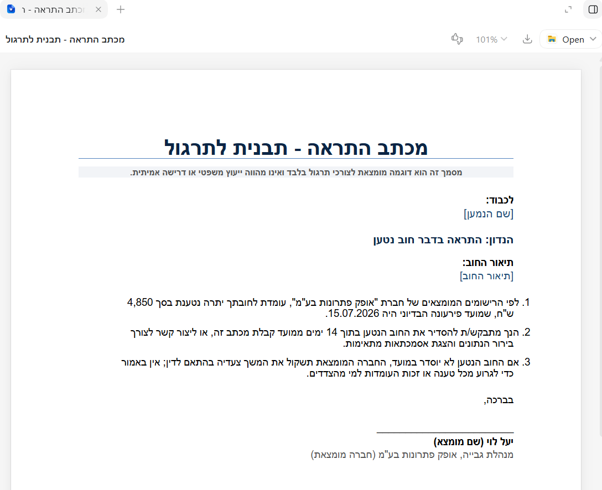
- 1כפתור החץ להורדת הקובץ - לחיצה עליו פותחת חלון שמירה.
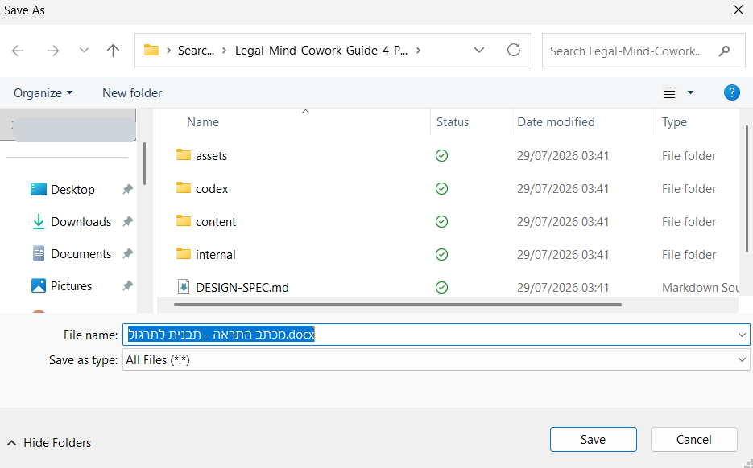
- 1שם הקובץ - אפשר לשנות אותו כאן, לפני השמירה.
- 2בוחרים באיזו תיקייה במחשב לשמור ולוחצים Save - הקובץ נשמר היכן שבחרתם, למשל בתיקיית התיק.
וכך זה נראה רגע לפני השליחה - בשיחת Work חדשה (לא בשיחה שבה נוצרה התבנית!), עם הקובץ מצורף והבקשה מנוסחת:

- 1קובץ התבנית מצורף ומופיע ככרטיס מעל הבקשה. שימו לב שהבקשה עצמה כוללת גם את רגע העצירה: "לפני שאתה יוצר את הקובץ הסופי, הצג לי רשימה של מה ששינית".
וכשהעבודה מגיעה לרגע האמת - Work עוצר, ומציג בדיוק מה הוא עומד לשנות:

- 1כל שינוי מוצג במבנה של לפני ← אחרי - רואים בדיוק מה יוחלף בשדות, ומה יישאר כמות שהוא.
- 2"אם מאושר, אצור ואבדוק את קובץ ה-Word הסופי" - הקובץ לא נוצר בלי מילה מפורשת שלכם. עונים "מאושר", ורק אז Work ממשיך.
זה בדיוק רגע העצירה שביקשנו בבקשה עצמה - והוא ההרגל החשוב ביותר בעבודה עם תבניות: אתם רואים את השינויים לפני שהם הופכים לקובץ, לא אחרי.
מה קורה אחרי שעונים "מאושר"? המסע עד הקובץ
שווה לעקוב אחרי הדרך, לא רק אחרי התוצאה - כי כאן רואים איך Work חושב. מיד אחרי המילה "מאושר", הוא מציג את התוכנית שלו ומתחיל לעבוד:

- 1מילה אחת - "מאושר" - וזה כל מה שנדרש כדי לשחרר את העבודה להמשך.
- 2Work חוזר על התוכנית במילים שלו: יחליף רק את שלושת השדות שאושרו, ויבדוק שלא חל שינוי במבנה. כך יודעים שהוא הבין נכון.
- 3"Ran commands" - הוא באמת מפעיל כלים, לא רק כותב טקסט. לחיצה על החץ מציגה בדיוק אילו.
ובאמצע העבודה מתרחש הרגע שהופך את Work לעוזר שאפשר לסמוך עליו - הוא בודק את עצמו:
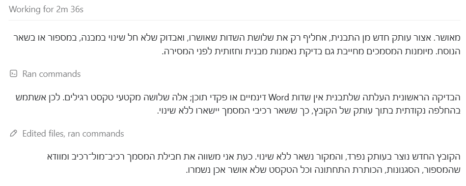
- 1"Edited files, ran commands" - העריכה בוצעה על עותק נפרד; קובץ המקור נשאר ללא שינוי.
- 2בדיקה עצמית לפני מסירה: Work משווה את המסמך רכיב-מול-רכיב ומוודא שהמספור, הסגנונות וכל טקסט שלא אושר - נשמרו.
וכשהכל נבדק - מגיעה ההודעה המסכמת, עם הקובץ המוכן:
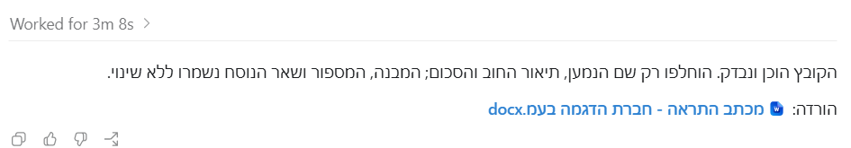
- 1קישור ההורדה של הקובץ המוגמר - לחיצה עליו פותחת את חלון התצוגה.
והנה התוצאה - אותו מכתב בדיוק, שבו הוחלפו רק שלושת השדות שאישרנו:
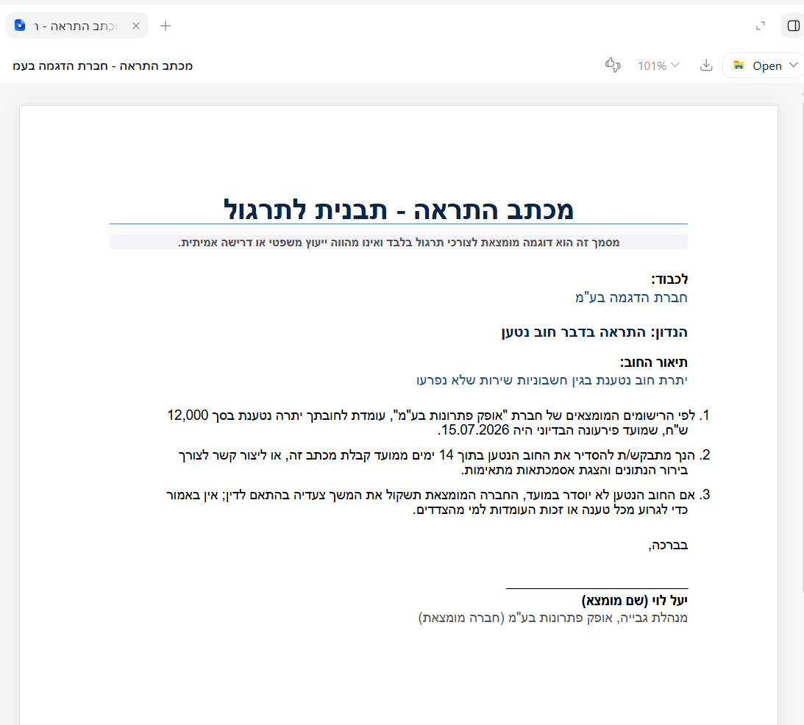
- 1שם הנמען החדש - במקום השדה [שם הנמען] שבתבנית.
- 2תיאור החוב שהוזן - במקום [תיאור החוב].
- 3הסכום עודכן ל-12,000 ש"ח - וכל שאר הסעיף, המספור והניסוח נשארו בדיוק כפי שהיו.
- 4וחץ ההורדה - פותח שוב את חלון השמירה שהכרתם למעלה, ושומרים את המכתב החדש ליד התבנית.
כשמחוברת אפליקציית Google Workspace, מצב Work יכול ליצור ולערוך גם Google Docs, Sheets ו-Slides ישירות.
כדאי לדעת שהתמיכה עדיין לא אחידה בין כל סוגי הקבצים: עריכה ישירה בתוך מצגת PowerPoint קיימת עדיין לא נתמכת בזרימת העבודה הרגילה של Work בדסקטופ. גם עדכון של קובץ Excel שכבר פתוח לא נתמך ישירות דרך Work בשלב זה - יש לבדוק את התוסף הייעודי ChatGPT for Excel כפתרון חלופי.
חיבור לאפליקציות שלכם דרך Plugins
כדי ש-Work יוכל לשלוף מידע אמיתי מהעולם שלכם - ולא רק מה שכתוב בשיחה - צריך לחבר אותו לאפליקציות שאתם כבר עובדים איתן, דרך ספריית Plugins.
נדגים על החיבור החשוב ביותר למשרד - היומן. רוב המשרדים בישראל חיים על Microsoft 365, ולכן נחבר כאן את Outlook Calendar; אותם צעדים בדיוק עובדים לכל אפליקציה אחרת בספרייה.
- בתפריט הצד לחצו על Plugins.
- בחיפוש שבראש העמוד הקלידו Microsoft 365 - ויופיעו כל האפליקציות הרשמיות של Microsoft, ובהן Outlook Calendar ליומן ו-Outlook Email למייל. (חיפוש "Outlook" יצמצם לשתיים האלה בלבד.)
- לחצו על Install ליד Outlook Calendar.
- במסך ההיכרות שייפתח לחצו Continue והתחברו עם חשבון ה-Microsoft שלכם - מיד נראה בדיוק מה קורה בשלב הזה, לפי סוג החשבון שלכם.
וכך נראית הספרייה, וכך נראה דף הפלאגין עצמו:
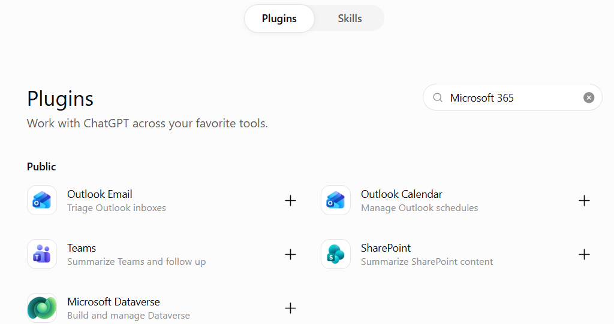
- 1שדה החיפוש. חיפוש Microsoft 365 מציג את כל המשפחה בבת אחת; חיפוש Outlook יצמצם ליומן ולמייל בלבד.
- 2Outlook Calendar - היומן, וזה מה שנחבר כאן. לצידו Outlook Email, ומתחת Teams, SharePoint ו-Microsoft Dataverse - כולם רשמיים.
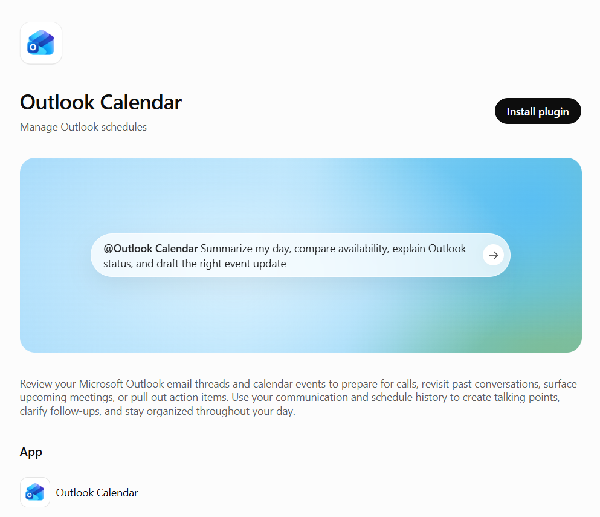
- 1Install plugin - וזה כל מה שצריך ללחוץ. שימו לב שהדף מראה לכם מראש את צורת הפנייה: @Outlook Calendar ואחריה בקשה בשפה חופשית.
וכך זה נראה על המסך, צעד אחרי צעד. לחיצה על Install פותחת קודם כל מסך היכרות של ChatGPT - שקיפות מלאה לפני שמתחברים:
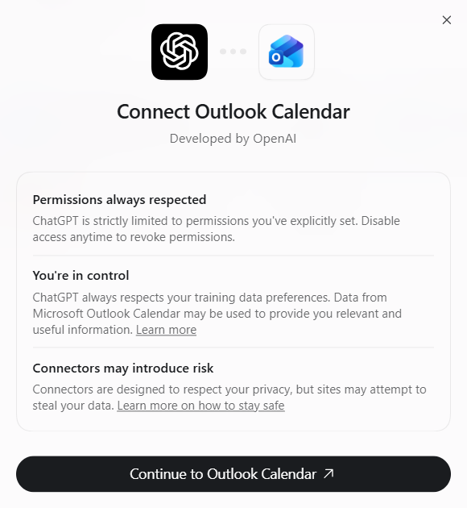
- 1מסך ההיכרות לפני החיבור: ChatGPT מוגבל להרשאות שאישרתם, אתם בשליטה ואפשר לנתק בכל רגע - לצד תזכורת גלויה שחיבורים חיצוניים דורשים זהירות.
- 2Continue to Outlook Calendar - ממשיכים להתחברות עם חשבון Microsoft.
ומכאן ממשיכים להתחברות עם חשבון Microsoft - בדיוק כמו בכל התחברות אחרת: בוחרים את החשבון, מקלידים את הסיסמה, וממשיכים.
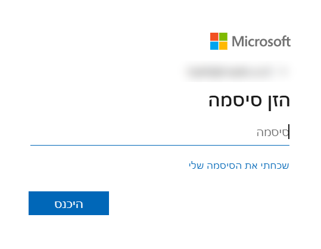
- 1שדה הסיסמה. זה כל מה שנדרש בשלב הזה - החשבון מזוהה, מקלידים את הסיסמה וממשיכים. פעם אחת, ולא שוב.
אם החשבון שלכם מנוהל על ידי הארגון, ייתכן שתידרש פעם אחת הסכמה של מי שמנהל אותו - היא מגיעה במייל, ומשם ממשיכים בדיוק מאותה נקודה.
ואיך משתמשים בחיבור בתוך שיחה?
אחרי שהחיבור אושר, אין צורך לבחור את האפליקציה בכל פעם מחדש: כותבים בשיחת Work את הסימן @ ואחריו שם האפליקציה - למשל @Outlook Calendar - ומבקשים כרגיל: "מה יש לי ביומן מחר?". אפשר גם פשוט לנסח את הבקשה, ולתת ל-Work לבחור לבד באיזה חיבור להשתמש.
ומכאן אין צורך לחפש אותו שוב. בשיחת Work מקלידים @, והאפליקציות המחוברות מופיעות ברשימה:
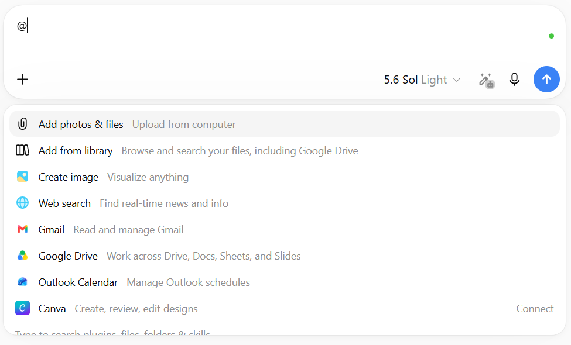
- 1Outlook Calendar ברשימה - כלומר הוא מחובר ומוכן לשימוש. בוחרים אותו וממשיכים לכתוב.
- 2ולהשוואה: לצד אפליקציה שעוד לא חוברה מופיעה המילה Connect. כך תמיד אפשר לראות במסך אחד מה מחובר ומה לא.
וכך זה נראה בפועל. זו הפנייה:
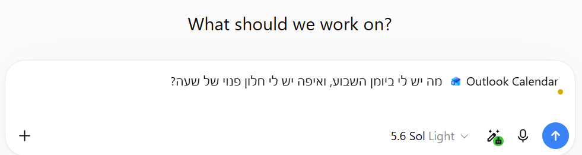
- 1אחרי הבחירה, שם הפלאגין נשאר בתחילת השורה - בצד ימין - וזה הסימן שהבקשה תופנה אליו. אל תמחקו אותו: פשוט ממשיכים לכתוב את השאלה אחריו, בשפה רגילה, ושולחים.
וזו התשובה שחזרה מהיומן - על יומן שכל האירועים בו מומצאים ומסומנים "תרגול", כדי שנוכל להראות אותו כאן במלואו:
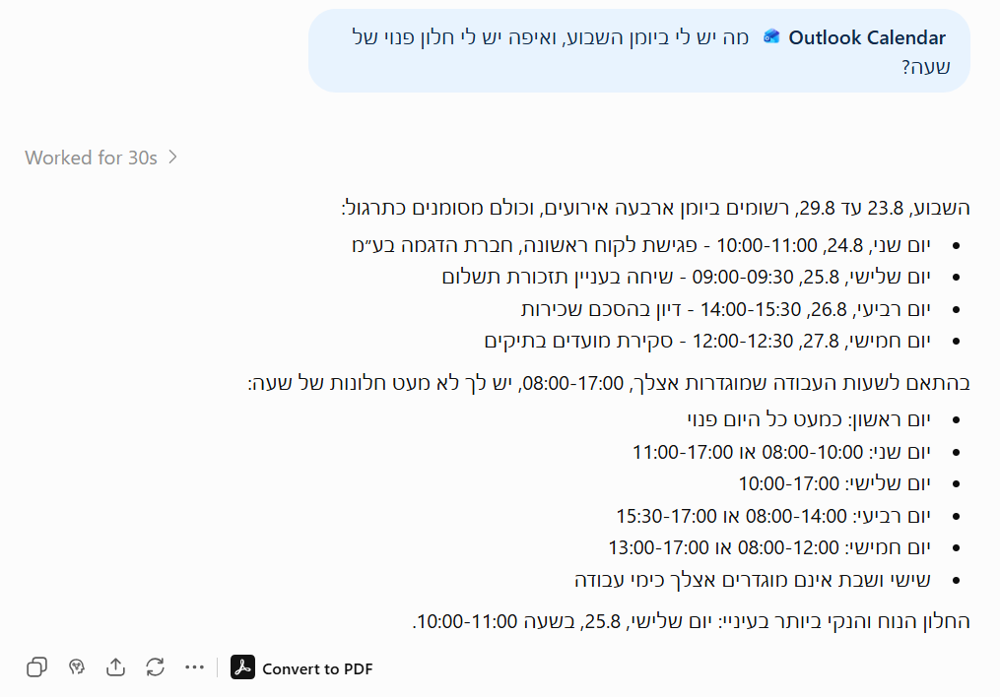
- 1הוא קרא את היומן האמיתי והציג את ארבעת האירועים עם התאריכים והשעות - וגם שם לב שכולם מסומנים "תרגול".
- 2ואז חישב: מול שעות העבודה שמוגדרות בחשבון (08:00-17:00) הוא מפרט את החלונות הפנויים בכל יום, ומציין ששישי ושבת אינם ימי עבודה.
- 3וההמלצה שלו: "החלון הנוח והנקי ביותר בעיניי: יום שלישי, 25.8, בשעה 10:00-11:00". זו התשובה שעורך דין באמת רוצה - לא רשימה, אלא הכרעה.
עדכון מאוגוסט 2026: במחשבי Mac מהדורות האחרונים (שבבי Apple Silicon) נוספה תמיכה גם ב-Apple Messages.
Plugins זמינה בשיחות Work בדפדפן (ווב) ובאפליקציית המחשב - אך לא באפליקציית המובייל בשלב זה. אם אתם על הטלפון, תצטרכו לעבור למחשב כדי לחבר אפליקציה חדשה או לגשת לספרייה עצמה; שיחה שכבר מחוברת ממשיכה לעבוד כרגיל.
אם אתם לא בטוחים אילו אפליקציות שווה לחבר קודם, תתחילו מהכלים שבהם אתם כבר שומרים את רוב המידע העדכני שלכם - יומן, מייל, ותוכנת התקשורת הפנים-משרדית.
ככלל אצבע: פעולה שרק שולפת מידע קיים בדרך כלל לא תעצור אתכם באמצע. אבל ברגע שהפעולה משנה משהו בעולם האמיתי - לשלוח הודעה, למחוק שורה, לפרסם תוכן - כמעט תמיד ייעצר התהליך ויחכה לאישור מפורש שלכם.
משימות מתוזמנות שרצות לבד
לא כל שימוש ב-Work צריך להתחיל בכם. אפשר להגדיר משימה שתרוץ פעם אחת בזמן שתבחרו, שתחזור על עצמה לפי לוח זמנים קבוע, או שפשוט תעקוב אחרי משהו ותדווח רק כשבאמת יש חדש לדווח.
איך יוצרים משימה: מבקשים אותה בשיחה, במילים שלכם
אין כאן טופס ואין תפריט נסתר. פותחים שיחת Work חדשה וכותבים בשפה חופשית מה לעשות ומתי - כך:

- 1הבקשה כולה במשפט אחד: מה להכין, שהמשימה חד-פעמית, ומתי לרוץ. לא צריך שום טופס - ChatGPT יבנה מזה את המשימה בעצמו.
שולחים - ו-ChatGPT מתרגם את המשפט הזה למשימה מתוזמנת אמיתית. הוא עונה בהודעה קצרה, ומצרף אליה כרטיס משימה:

- 1ChatGPT מאשר שהמשימה נוצרה בדיוק כפי שביקשנו - חד-פעמית, ל-20:36 - ומזכיר שנשאר צעד אחד: לאשר את הכרטיס.
- 2כרטיס המשימה שנוצר בתוך השיחה, עם שם שנגזר מהבקשה ותיאור תדירות מקוצר.
- 3כפתור Open - פותח את חלונית הפרטים של המשימה, שבה בודקים ומאשרים הכל.
לחיצה על Open פותחת את החלק החשוב באמת - חלונית הפרטים. כל מה ש-ChatGPT הבין מהבקשה שלכם פרוש כאן בשדות ברורים, וכל שדה אפשר לתקן לפני שמאשרים:

- 1ההוראה שתרוץ בכל הפעלה, כפי ש-ChatGPT ניסח אותה מהבקשה שלנו. זהו שדה שאפשר לערוך - מה שכתוב כאן הוא מה שיקרה בפועל.
- 2בלוק Details - איפה התוצאות יופיעו: Existing chat פירושו שהתוצר יגיע לאותה שיחה שממנה יצרנו את המשימה.
- 3בלוק Frequency - התדירות הקובעת (כאן Custom, מותאמת לזמן שביקשנו) והגדרת ההתראות: Important updates אומר שתקבלו הודעה רק כשיש משהו ששווה לראות.
הכרטיס בשיחה כתב "Daily at 8:36 PM", אבל בחלונית הפרטים כתוב Repeat: Custom - וזו ההגדרה הנכונה (חד-פעמית, לזמן שביקשנו). תיאור הכרטיס הוא תקציר כללי שלפעמים מעגל פינות; את האמת בודקים תמיד בחלונית הפרטים, לפני שמאשרים.
ואיפה רואים את כל המשימות יחד?
עדכון מאוגוסט 2026: בגרסאות העדכניות של אפליקציית המחשב נוסף לתפריט הצד פריט Scheduled (לא רואים אותו? עדכנו את האפליקציה - הוא הגיע בעדכון):
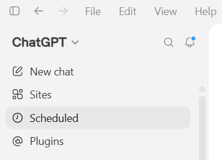
- 1Scheduled בתפריט הצד - נוסף בעדכון מאוגוסט 2026. לחיצה אחת, ואתם במסך הניהול.
לחיצה עליו פותחת את מסך הניהול המרוכז של כל המשימות:
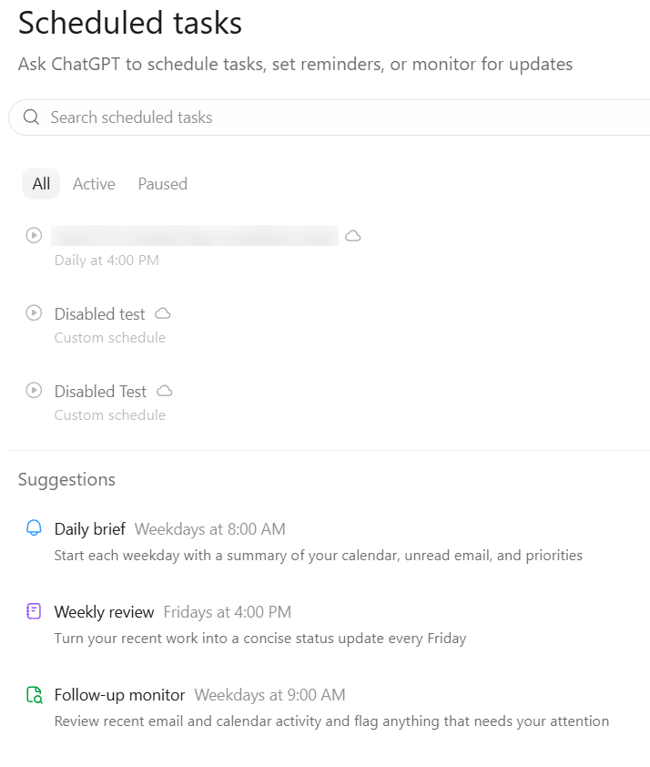
- 1המסננים All / Active / Paused - כל המשימות, הפעילות בלבד, או המושהות.
- 2רשימת המשימות - לחיצה על שורה פותחת את חלונית הפרטים ואת היסטוריית ההרצות. (שמות המשימות כאן טושטשו.)
- 3Suggestions - תבניות מוכנות מבית OpenAI, למשל תקציר בוקר יומי של היומן, המייל וסדרי העדיפויות.
ואותה רשימה בדיוק זמינה גם מכל דפדפן, בכתובת chatgpt.com/schedules - נוח כשעובדים ממחשב אחר או כשהאפליקציה סגורה:
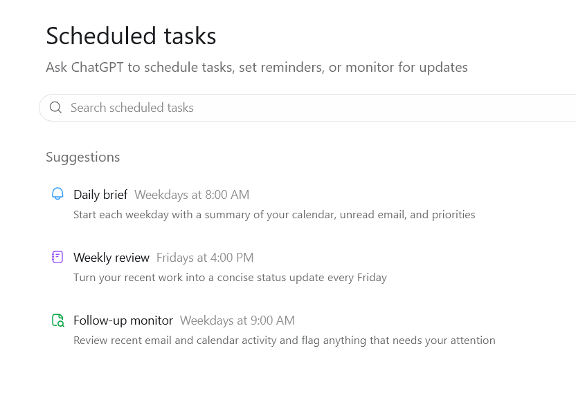
- 1כל שורה כאן היא משימה שרצה לבד - עם תיאור קצר של מה שהיא עושה ומתי.
מאותו עמוד אפשר גם להשהות, לערוך או למחוק כל משימה קיימת, ולפתוח כל שורה כדי לראות את היסטוריית ההרצות שלה. כשהרצה מסוימת מגלה משהו שדורש תשומת לב, מופיעה נקודת התראה קטנה ליד השורה שלה - כדי שלא תצטרכו לבדוק ידנית כל משימה בנפרד.
וכמה רעיונות למשימות ששוות הגדרה במשרד:
- לבדוק כל בוקר אם התפרסמו פסקי דין או חקיקה חדשים בתחום עיסוק מסוים, ולשלוח תמצית קצרה
- להזכיר מראש מועדי הגשה והתיישנות קרובים, לפי רשימת התיקים הפתוחים
- לרכז אחת לשבוע דוח שעות חיוב לפי לקוח, לקראת הפקת חשבוניות
שלוש מגבלות שכדאי לדעת מראש: משימה בודדת לא יכולה לרוץ בתדירות גבוהה מפעם בשעה; מספר המשימות הפעילות בו-זמנית תלוי במסלול המנוי (למשל עד 3 בתוכנית Go, עד 5 ב-Plus, ועד 15 בתוכניות Pro, Business ו-Enterprise - נכון לאוגוסט 2026); ומשימה שתלויה בקבצים מקומיים על המחשב שלכם תרוץ רק אם המחשב דלוק והאפליקציה פתוחה באותו הרגע.
אתרים אינטראקטיביים עם Sites (יכולת נלווית)
מעבר ליצירת קבצים, Work יכול גם להפוך רעיון או מאגר נתונים לאתר אינטרנט חי, שרץ בתוך ChatGPT ואפשר לשתף בקישור. זו יכולת נלווית ומרשימה להדגמה - אך פחות מרכזית לעבודה משפטית שוטפת, ועדיין עם מגבלות שכדאי להכיר.
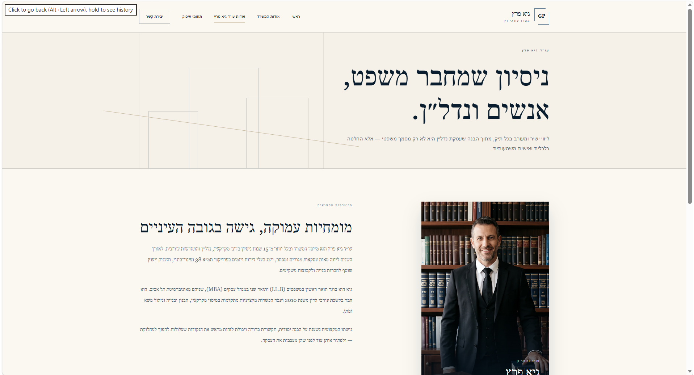
- 1אחד מעמודי האתר שנוצרו (עמוד "אודות עורך הדין") - עם תפריט ניווט מלא בעברית מיושרת מימין לשמאל, וטקסט וביוגרפיה שנכתבו אוטומטית.
בקצרה, כך זה עובד: פותחים שיחת Work, לוחצים על Sites בתפריט הצד, ומתארים בפירוט את האתר הרצוי. בסיום מופיע קישור לשיתוף.
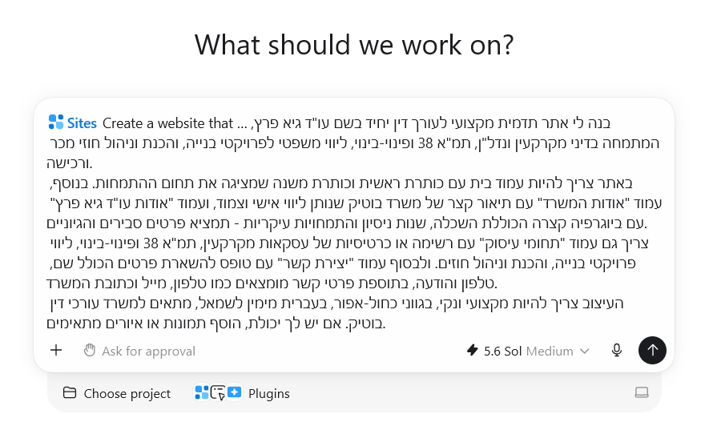
- 1הבקשה המלאה שהוזנה בפועל כדי לבנות את האתר שמופיע למעלה - כולל תיאור העורך דין, תחומי העיסוק, ומה חייב להיות בכל עמוד.
שימו לב לכמה דברים בבקשה הזו שהופכים אותה לאפקטיבית: היא לא מסתפקת ב"בנה לי אתר למשרד עורכי דין" - היא מגדירה מראש מי קהל היעד (לקוחות פרטיים ועסקיים בתחום המקרקעין), אילו עמודים חייבים להיות, ואפילו את הטון הרצוי ("מקצועי, בגוני כחול-אפור"). ככל שהבקשה הראשונית מפורטת יותר, כך פחות סבבי עריכה נדרשים אחר כך.
Sites יצא בגרסת בטא ציבורית ואינו כלול בתוכניות Free ו-Go - נדרשת תוכנית Plus ומעלה. גם בתוך התוכניות הזכאיות, ההשקה מדורגת: משתמשי Pro, Pro Lite ו-Edu קיבלו אותו ראשונים, ומשתמשי Plus מקבלים גישה בהדרגה אחריהם (נכון לאוגוסט 2026 הפריסה ל-Plus עדיין בעיצומה). עדכון מאוגוסט 2026: בעלי Site בתוכניות Plus ו-Pro יכולים כעת לשנות את הכתובת של Site קיים בלי לפרוס אותו מחדש, והכתובת הישנה מפנה אוטומטית לחדשה.
לשימוש מקצועי אמיתי - כמו אתר רשמי למשרד - כדאי להיזהר בשלב הזה: תמונות ה"אנשים" שהמערכת מייצרת הן דמויות מלאכותיות שלא קיימות, וזה לא מתאים להצגה כלפי לקוחות. Sites גם עדיין בגרסת בטא, עם מגבלות עיצוב. שימושי בעיקר להדגמות פנימיות, לוחות בקרה או אבות-טיפוס - לא כתחליף לאתר רשמי בנוי כהלכה.
עבודה עם קבצים מקומיים, דפדפן מובנה ו-Computer Use
שלוש היכולות הבאות זמינות אך ורק באפליקציית המחשב - כי הן דורשות גישה ישירה למערכת ההפעלה שלכם.
קבצים מקומיים
הגישה לקבצים לא עובדת דרך חלון הרשאה חד-פעמי לכל המחשב. במקום זה, פותחים תיקיית עבודה ספציפית - פרויקט או תיקייה מוגדרת - ושולטים בכל פעולה דרך פקד הרשאות שנמצא מתחת לתיבת הכתיבה. חשוב להבין: התיקייה שתבחרו היא הגבול. אם, למשל, תבחרו לפתוח את תיקיית ה-Desktop עצמה, Work יראה את כל מה שיושב בתוכה ישירות - בדיוק כמו כל תיקייה אחרת - אבל זה עדיין לא שקול לגישה לכל המחשב; קבצים שיושבים בתיקיות אחרות (המסמכים, ההורדות וכו') יישארו מחוץ לטווח, אלא אם תפתחו גם אותן במפורש.
- באפליקציית המחשב, במצב Work, הדרך הפשוטה ביותר: גוררים את התיקייה (או את הקבצים) מסייר הקבצים ישירות לתוך תיבת השיחה. אפשר גם דרך כפתור ה-"+" שליד תיבת הכתיבה, שמציע לצרף קבצים ותיקיות.
- מתחת לתיבת הכתיבה, ודאו שפקד ההרשאות מוגדר על Ask for approval.
- במצב הזה, Work קורא אך ורק מתוך התיקייה שפתחתם, ועוצר לבקש אישור לפני כל כתיבה או מחיקה.

- 1תיקיית עבודה מחוברת - Work רואה רק אותה, לא את כל המחשב.
- 2"Ask for approval" מסומן: כל עריכת קובץ או שימוש באינטרנט דורשים אישור.
למי שרק מתחיל להכיר את הכלי, מומלץ להישאר על Ask for approval כברירת מחדל - חשוב שבעתיים כשעובדים עם תיקי לקוחות.
דפדפן מובנה
בתוך אפליקציית המחשב יש דפדפן שלם, שמאפשר ל-Work לגלוש ולבצע פעולות בעמודים בשמכם - אחרי אישורכם. יש גם מצב הערה ייעודי (Annotation) לסימון אזור בעמוד.
אם אתם מעדיפים להישאר בדפדפן הרגיל שלכם, OpenAI עדכנה גם את תוסף ה-Chrome של ChatGPT כך שאפשר להפעיל אותו ישירות מסרגל הצד.
Computer Use - שליטה באפליקציות אחרות במחשב
היכולת המתקדמת ביותר מאפשרת ל-Work להפעיל בעצמו אפליקציות אחרות שמותקנות אצלכם - לא רק את הדפדפן המובנה. זו יכולת נפרדת מ"קבצים מקומיים" שמעליה, והיא כבויה כברירת מחדל - צריך להפעיל אותה במפורש לפני שאפשר להשתמש בה.
- באפליקציית המחשב, במצב Work (או במצב Codex), לחצו על Plugins בתפריט הצד.
- אתרו את הכלי Computer Use ברשימה, ולחצו על Install אם הוא עוד לא מותקן אצלכם.
- בעמוד שנפתח אחרי ההתקנה יש שני מתגים - אחד ראשי ואחד של היכולת עצמה. הפעילו את שניהם.
- לחצו על Try now כדי לפתוח שיחה עם היכולת פעילה.
- בהגדרות, תחת Settings ואז Computer Use, אפשר לחזור בכל שלב ולבדוק לאילו אפליקציות כבר יש גישה מאושרת.
- במק בלבד: כשתופיע בקשת מערכת ההפעלה, אשרו הרשאות Screen Recording ו-Accessibility - בלעדיהן היכולת לא תוכל לראות או לתפעל אפליקציות אחרות.
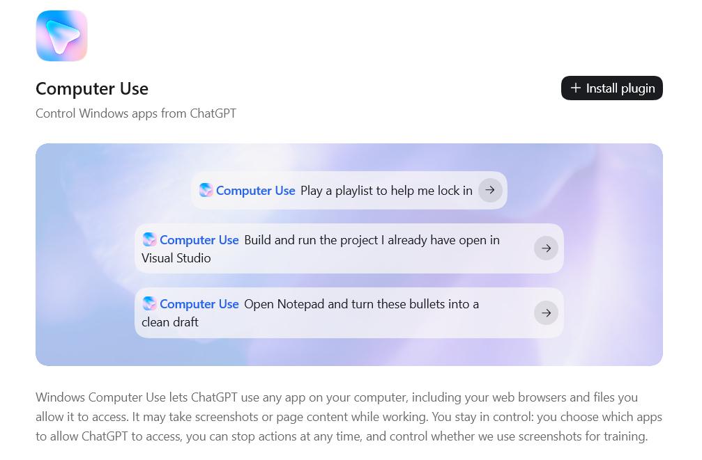
- 1כפתור ה-Install plugin - כאן מתחיל תהליך ההפעלה. שימו לב לדוגמאות המובנות שמוצעות מתחת, כמו "Open Notepad and turn these bullets into a clean draft" - בדיוק סוג הבקשה שמדגימה איך לכתוב פנייה ליכולת הזו.
כדי להתחיל משימה בפועל, מזכירים בבקשה את @Computer או את שם האפליקציה הספציפית עם @ (למשל @Word), ומתארים מה בדיוק צריך לקרות באותה אפליקציה.
בפעם הראשונה שהיא נוגעת באפליקציה מסוימת, תופיע בקשת אישור עם שלוש אפשרויות: "Always allow" (לזכור להבא), "Allow this conversation" (חד-פעמי) או "Deny". אין כאן מתג יחיד של "תן גישה לכל שולחן העבודה" - האישור הוא תמיד לפי אפליקציה בודדת, אחת בכל פעם.
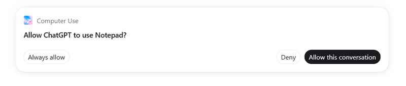
זו בדיוק החלונית שממחישה את הנקודה: הבקשה היא "האם לאפשר ל-ChatGPT להשתמש ב-Notepad" - לא "האם לאפשר גישה למחשב". כל אפליקציה נוספת שהיא תרצה לגעת בה תבקש אישור דומה משלה.
בניגוד למה שאפשר לחשוב, Computer Use זמינה גם ב-Windows וגם ב-Mac - לא רק בווינדוס. יש הבדל מעשי בין המערכות: ב-Windows היא פועלת רק על שולחן העבודה הפעיל בחזית, כך שלא ניתן להמשיך לעבוד על המחשב באותו זמן שהיא רצה. בכל שלב אפשר לעצור פעולה באמצע, והמערכת שומרת תיעוד חזותי של מה שקרה על המסך תוך כדי העבודה. היא גם לא יכולה לאשר הרשאות מנהל (admin) בעצמה או לעקוף בקשות אבטחה - שם תמיד תידרש פעולה ידנית שלכם.
נקודה חשובה במיוחד למשרד עורכי דין: קובץ שיושב רק על המחשב שלכם לא "בורח" משם מעצמו - הוא יוצא רק אם אתם, במפורש, מבקשים לשלוח או לשתף אותו. חשוב לדייק: "לא בורח" מדבר על שיתוף עם גורמים חיצוניים - אבל עצם זה ש-Work קורא ומעבד קובץ מעביר את תוכנו לשרתי OpenAI, ולכן על חומר לקוחות חלות דרישות המנוי שבפרק 15. לפני שמחברים תיקיית לקוח לכלי חיצוני, ודאו שזה תואם את חובת הסודיות והכללים האתיים הרלוונטיים.
בחירת מודל ורמת מאמץ - משפחת GPT-5.6
מצב Work מופעל על ידי משפחת המודלים GPT-5.6, שתוכננה במיוחד להתמודד עם משימות ארוכות ומרובות-שלבים, שימוש בכלים חיצוניים, וגלישה באינטרנט.
- Sol - המודל החזק ביותר במשפחה, מיועד למשימות מורכבות שבהן הדיוק חשוב יותר מהמהירות.
- Terra - איזון בין ביצועים לעלות, מתאים לשימוש היומיומי השוטף.
- Luna - המודל המהיר והחסכוני ביותר, למשימות פשוטות.
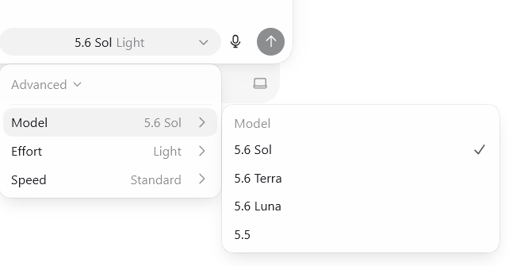
- 1רשימת הדגמים: Sol, Terra, Luna וגם הגרסה הקודמת 5.5, לצד קביעת רמת מאמץ ומהירות.
- פתחו שיחת Work.
- לחצו על שם המודל המוצג בראש השיחה או ליד תיבת הכתיבה.
- בחרו את הדגם המתאים למשימה.
- את רמת המאמץ קובעים באותו תפריט, בעזרת הסליידר שנע בין "Faster" (מהיר יותר) ל-"Smarter" (מעמיק יותר) - זה פקד אחד, לא שניים.
ככל שרמת המאמץ גבוהה יותר, כך התוצאה מדויקת יותר - אך גם צורכת יותר מהמכסה שלכם. למשימה משפטית מהותית עדיף לבחור מאמץ גבוה; למשימות שגרתיות מספיקה ברירת המחדל.
כדי להמחיש את הפער בין הדגמים: לפי מבחני היכולת הרשמיים ש-OpenAI פרסמה, Sol משיג תוצאות מובילות בתחומן - כ-92% הצלחה במבחן BrowseComp שבודק מחקר עצמאי ומורכב ברשת, וכ-63% במבחן OSWorld 2.0 שבודק ביצוע משימות עצמאי במחשב.
הבחירה בין שלושת הדגמים לא פתוחה לכולם: משתמשי Free ו-Go מקבלים במצב Work רק את Terra, בלי אפשרות לבחור - הבורר שמוצג באיור למעלה מופיע רק במנויים Plus, Pro, Business, Enterprise ו-Edu.
מעבר לבחירת דגם, יש עוד שתי רמות מאמץ מיוחדות: Max נותן לאותו דגם יותר זמן לחשוב על משימה בודדת, וזמין לכל מי שיש לו גישה ל-GPT-5.6 במצב Work. Ultra עובד אחרת לגמרי - הוא מפצל את המשימה בין כמה תת-סוכנים שעובדים במקביל ומאחד את התוצאות שלהם, ולכן הוא שמור כרגע רק למנויי Pro ו-Enterprise. את שתי הרמות האלה, במסלולים שבהם הן זמינות, בוחרים מאותו תפריט דגמים שהכרתם למעלה.
מה זמין איפה: ווב, מובייל ואפליקציית מחשב
במקום לזכור טבלה של יכולות, הכי פשוט לחשוב על זה לפי המכשיר שבו אתם נמצאים כרגע - מה הוא כן נותן לכם, ומה הוא לא.
דפדפן (ווב)
chatgpt.com מכל מחשב
- ✓עבודת Work המלאה בענן
- - אין גישה ישירה לקבצים על המחשב - רק קבצים שמעלים ידנית
- ~דפדפן מובנה בענן בלבד, לא הדפדפן הרגיל שלכם
- ✓ניהול מלא של משימות מתוזמנות
מובייל
אפליקציית ChatGPT לטלפון
- ✓עבודת Work המלאה בענן
- - אין גישה ישירה לקבצים על הטלפון או המחשב
- ~דפדפן מובנה בענן בלבד
- ✓ניהול מלא של משימות מתוזמנות, כולל התראות
אפליקציית מחשב
macOS או Windows
- ✓עבודת Work בענן וגם שיחות מקומיות נפרדות (שיחה שנפתחה על תיקייה מהמחשב, כמו בפרק 09 - נשמרת אצלכם ולא בענן)
- ✓קבצים מקומיים - לפי תיקייה שפתחתם ובאישורכם
- ✓דפדפן מובנה מקומי, כולל לשוניות ומצב הערות, ו-Computer Use
- ✓יצירת משימות בתוך שיחה, וניהול מרוכז מסרגל הצד (Scheduled)
נקודה שכדאי לתכנן סביבה מראש: כרגע קיים פער בין הענן לדסקטופ. שיחה שהתחלתם בווב תישאר שם ולא "תקפוץ" לבד לאפליקציית המחשב.
איך כותבים בקשה שמביאה תוצאה טובה
איכות התוצאה בעבודה מול Work כמעט תמיד תלויה בכמות ההקשר שקיבל מראש, לא ביכולת של המודל עצמו. הדרך הכי ברורה להראות את זה היא דוגמה אחת - לפני ואחרי - מעולם ההסכמים.
בקשה שמשאירה יותר מדי לניחוש
"תכין לי טיוטת הסכם שכירות למשרד."
בקשה כזו תחזיר משהו סביר על פניו - אבל Work נאלץ לנחש כמעט הכול: איזה נוסח בסיס להשתמש, אילו סעיפים המשרד תמיד מקפיד להוסיף, ומה מותר לו לשנות בלי לעצור ולשאול.
אותה בקשה, עם הקשר
"מצורף הסכם השכירות האחרון שסגרנו - תשמש כתבנית. הכן טיוטה חדשה לשוכר חדש לפי אותו מבנה סעיפים ואותה מספור, בדיוק. עדכן רק צדדים, נכס ותנאי תשלום. אל תיגע בסעיף הבוררות. לפני שאתה כותב את הקובץ הסופי, הצג לי רשימה קצרה של כל המספרים והתאריכים ששינית, כדי שאאשר."
ההבדל לא בניסוח - הוא בכך שהבקשה השנייה נתנה ל-Work שלושה דברים שהראשונה לא נתנה: מקור אמת קונקרטי להעתיק ממנו, גבול ברור למה שאסור לגעת בו, ורגע עצירה מוגדר מראש לפני המסירה הסופית.
אם ניסוח מסוים חוזר על עצמו אצלכם - למשל אותה בקשה לכל הסכם שכירות חדש - שווה לשמור אותו כקובץ נפרד משלכם ולהעתיק ממנו בכל פעם, במקום לשחזר הכל בעל פה.
שימושים אמיתיים למשרד עורכי דין
מצב Work מתאים במיוחד לתהליכים חוזרים שכל משרד עורכי דין מכיר - הנה דוגמאות לפי תחום עיסוק:
- מקרקעין ונדל"ן: השוואה בין גרסאות חוזה לאורך משא ומתן, ואיתור פערים בין נסחי טאבו לבין מצג העסקה.
- ליטיגציה ודיני נזיקין: סיכום כתבי טענות ותצהירים ארוכים, בניית ציר זמן מהראיות שבתיק, והכנת טיוטת טיעונים ראשונית לקראת דיון או הערכת סיכויי ערעור.
- דיני חברות ומסחרי: הכנת טיוטת הסכם ראשונה לפי תבנית קבועה של המשרד, ומיפוי סעיפים חריגים מול הסכם ייחוס.
- דיני עבודה: מעקב אחרי תיקי עובדים ומועדי התיישנות, והכנת טיוטת מכתב התראה לפי אירועי התיק.
- דיני משפחה וירושה: ריכוז מסמכים פיננסיים ומסמכי רכוש לקראת הסכם גירושין, והכנת טיוטת צוואה ראשונית לבדיקה.
- ניהול המשרד: דוח שעות חיוב חודשי לפי לקוח, ומעקב אוטומטי אחרי מועדי הגשה קרובים בכל התיקים הפתוחים.
ועדת האתיקה הארצית של לשכת עורכי הדין פרסמה גילוי דעת רשמי בנושא שימוש בבינה מלאכותית בעבודת עורכי הדין, שמתייחס במפורש לחשש מהפרת חובת הסודיות, הפרת חובת הנאמנות והמסירות ללקוח, וזליגת מידע חסוי. לפני שמחברים Work למערכות חיצוניות או מעלים חומר מתוך תיק לקוח, כדאי להכיר את ההנחיות הללו - לא כל מסמך בתיק מתאים להעברה לכלי ענן חיצוני, גם כשהוא נוח.
בכל הדוגמאות האלה המכנה המשותף זהה: לא מבקשים תשובה חד-פעמית, אלא בונים תהליך שחוזר על עצמו בכל תיק דומה.
זמינות, תוכניות והשקה הדרגתית
מצב Work יצא לדרך ב-9 ביולי 2026, אבל לא לכל המשתמשים בבת אחת - OpenAI פורסת אותו בגלים על פני כמה שבועות, לפי תוכנית ולפי פלטפורמה.
בגרסאות הווב והמובייל, הגישה מוגבלת לתוכניות בתשלום - Free ו-Go נשארות מחוץ לגל ההשקה הזה. הסדר: תחילה Pro, Enterprise ו-Edu, ורק אחר כך Plus ו-Business.
באפליקציית המחשב המאוחדת יש הבדל קטן בין המערכות שכדאי לדעת: ב-Mac הגישה נפתחה מיידית לכל התוכניות, כולל החינמית, כבר ביום ההשקה. ב-Windows ההרצה הייתה מדורגת על פני הימים שאחרי, גם היא לכל התוכניות כולל Free - אז אם עדיין לא רואים את זה בווינדוס, לרוב מדובר בעניין של ימים ספורים, לא יותר.
לגבי ישראל באופן ספציפי: נכון לאוגוסט 2026 לא פורסמה הודעה רשמית של OpenAI שמפרטת מדינה-מדינה. מה שכן פורסם: שההגבלות הגיאוגרפיות היחידות שצוינו בפירוש נוגעות לאיחוד האירופי, בריטניה ושווייץ - ורק לתכונות ספציפיות כמו פרסום ציבורי של אתרי Sites. ישראל אינה חלק מהאזור הזה, וההשקה הכללית תוארה כגלובלית - כך שסביר להניח שהזמינות בישראל תואמת את התמונה הכללית שמתוארת כאן, אך כדאי לבדוק בפועל בחשבון שלכם אם משהו ספציפי לא מופיע.
אבטחה, הרשאות ושליטה
באיזה סוג מנוי חובה להשתמש לעבודה עם חומר של לקוחות
לפני שמחברים כל כלי AI לעבודה עם מסמכי לקוחות, לא מספיק לבדוק אילו יכולות המנוי כולל - צריך לבדוק גם איזה הסכם משפטי עומד מאחוריו. ל-ChatGPT יש היום שלוש רמות מנוי שנבדלות זו מזו בדיוק בנקודה הזאת:
| תוכניות אישיות Free / Go / Plus / Pro Lite / Pro | Business | Enterprise / Edu | |
|---|---|---|---|
| מיועד ל | שימוש אישי | עסקים קטנים ובינוניים | ארגונים גדולים |
| הסכם עיבוד נתונים (DPA) | לא כלול | כלול | כלול |
| אימון המודלים על השיחות שלכם | כן, אלא אם מבטלים ידנית בהגדרות הפרטיות | לא, כברירת מחדל | לא, כברירת מחדל |
| כניסה מאובטחת ארגונית (SSO) ותפקידי הרשאה | לא | כן | כן, כולל ניהול משתמשים אוטומטי |
| מינימום משתמשים | - | 2 | לפי הסכם |
לפי ההצהרה הרשמית של OpenAI בעמוד Business data privacy באתרה: "כברירת מחדל, אנחנו לא משתמשים בנתונים מתוך ChatGPT Enterprise, ChatGPT Business, ChatGPT Edu... כולל קלט ופלט - לצורך אימון או שיפור המודלים שלנו." ההתחייבות הזו חלה רק על תוכניות עסקיות וארגוניות. בתוכניות אישיות יש לבטל זאת ידנית בהגדרות הפרטיות, ואין DPA כלול כברירת מחדל. תוכנית Business דורשת מינימום שני משתמשים.
המשמעות המעשית: אם המשרד שלכם מתכנן להזין לתוך Work מידע אמיתי מתיקי לקוחות, המנוי הרלוונטי היחיד הוא Business ומעלה - לא מנוי אישי, גם אם הוא בתשלום. מנוי אישי לא כולל הסכם DPA, וללא DPA אין בסיס חוזי שמחייב את OpenAI להימנע משימוש בנתונים שלכם.
שליטה כללית בתהליך
מעבר לרמת המנוי, OpenAI מציגה את מצב Work כמערכת שבה אתם, ולא הסוכן, נשארים בעמדת השליטה.
- השליטה על מקורות המידע נשארת אצלכם: אתם קובעים למה יש גישה, והמערכת עוצרת בפעולה רגישה.
- בסביבת Enterprise או Edu, מנהל המערכת קובע מראש מי רשאי להשתמש בכלי ולאילו מערכות להתחבר.
- קיימת שכבת בקרה ברמת הארגון: אילו Plugins מותר להתקין, גישה לרשת, והרשאות כתיבה - לפי תפקיד.
שכבת בקרה נוספת שכדאי להכיר נקראת Auto-review: כשהיא פעילה, בקשות אישור מסוימות לא מחכות דווקא לבן אדם - הן מנותבות ל"סוכן בוחן" נפרד, שמחליט אם לאשר את הפעולה ומחזיר נימוק להחלטה. הבדיקה שלו מתמקדת בסימנים ספציפיים: ניסיון להוציא מידע החוצה, בדיקת פרטי גישה או סיסמאות, החלשת הגנות קיימות, ופעולות הרסניות. חשוב להבין את הגבול: Auto-review רק מחליף מי בוחן את הבקשה - הוא לא מרחיב הרשאות ולא פותח גישה חדשה שלא הייתה קיימת קודם.
פעולות באתרים ובמערכות חיצוניות דורשות תשומת לב: תוכן שנמצא באינטרנט עלול לכלול מידע שגוי או הוראות זדוניות. תמיד כדאי לבדוק תוצאה לפני שסומכים עליה.
מגבלות ותקלות נפוצות - ומה עושים
מצב Work נמצא עדיין בתחילת ההשקה שלו, ולכן יש כמה מגבלות שכדאי להביא בחשבון:
- גלי ההשקה של יולי הושלמו ברובם. אם הפיצ'ר עדיין לא מופיע אצלכם - ודאו קודם שהאפליקציה מעודכנת לגרסה האחרונה.
- אין עדיין גשר מלא בין שיחת ענן לשיחה מקומית בדסקטופ.
- משימת Work טיפוסית צורכת מהמכסה שלכם יותר משיחת Chat רגילה.
- המערכת עדיין עלולה לטעות - חובה לבדוק כל תוצר לפני הסתמכות עליו בעבודה מול לקוח.
כלל אצבע שכדאי לאמץ מההתחלה: לפני שמתחילים כל משימה, החליטו במפורש איפה עובר הגבול בין "תמשיך לבד" ל"תעצור ותשאל אותי קודם".
וכשמשהו לא עובד - לפי התסמין:
לא רואים את הבורר Work ליד תיבת הכתיבה? בדקו קודם איפה אתם: בווב ובמובייל הוא זמין רק מ-Plus ומעלה (Free ו-Go לא כלולות שם), ובאפליקציית המחשב - לכל התוכניות.
משימה מתוזמנת לא רצה בזמן? אם היא תלויה בקבצים מקומיים, המחשב חייב להיות דלוק והאפליקציה פתוחה בשעת הריצה. פתחו את מסך Scheduled (בתפריט הצד, או בדפדפן ב-chatgpt.com/schedules) ובדקו מה כתוב ליד המשימה.
מחפשים את Scheduled בתפריט הצד ולא מוצאים? הפריט נוסף בעדכון מאוגוסט 2026 - עדכנו את האפליקציה. ובכל מקרה, הרשימה המרוכזת זמינה תמיד גם בדפדפן, בכתובת chatgpt.com/schedules.
לא מצליחים לחבר אפליקציה מהטלפון? ספריית ה-Plugins אינה זמינה במובייל בשלב זה - מחברים פעם אחת מהמחשב, ומאז החיבור עובד מכל מקום.
ניסיתם ליצור משימה מתוזמנת וקיבלתם סירוב? כנראה הגעתם למכסת המשימות הפעילות של המסלול (3 ב-Go, 5 ב-Plus, 15 ב-Pro, Business ו-Enterprise). השהו או מחקו משימה קיימת, ונסו שוב.
שיחה שהתחלתם בווב לא מופיעה באפליקציית המחשב? זה צפוי בשלב הזה - אין עדיין גשר מלא בין שיחות ענן לשיחות מקומיות. ממשיכים אותה היכן שהתחילה.
נגמרה המכסה באמצע היום? משימות Work צורכות יותר משיחה רגילה. המכסה מתחדשת מעצמה, וההודעה על המסך אומרת בדיוק מתי.
לסיכום
החלק הכי קל לפספס במצב Work הוא שהוא לא רק כלי חדש - הוא הזדמנות לתעד תהליכים שבמשרד קיימים היום רק "בראש" של מי שתמיד עושה אותם. ברגע שאתם מנסחים ל-Work בדיוק איך אתם רוצים שטיוטת הסכם, תזכיר ביניים או דוח שעות ייראו, אתם בעצם כותבים לראשונה תהליך שעד היום עבר בעל פה מעורך דין בכיר למתמחה.
כדאי להתחיל בקנה מידה קטן - עדיף משימה אחת, מוכרת, שקל לכם לשפוט אם התוצאה שלה טובה. משם, ההרחבה לשאר התהליכים במשרד קלה הרבה יותר.
ולבסוף, נקודה שכדאי לזכור בכל שלב: כמו בכל כלי שנוגע בחומר של לקוחות, ההחלטה איפה בדיוק Work עוצר ומחכה לאישור שלכם היא תמיד שלכם - לא שלו.
ואם אתם רוצים להשוות לפני שמתחייבים לפלטפורמה - במרכז המדריכים של Legal Mind מחכים לכם גם מפת ה-AI לעורכי דין: Claude מול ChatGPT מול Gemini, וגם מדריכי Claude Cowork - המקבילה של מצב Work בעולם של קלוד.
בהצלחה!